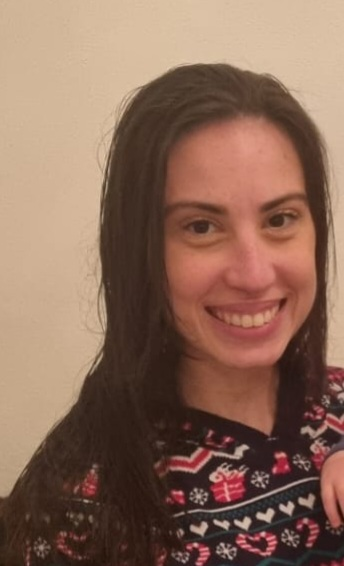

Meu nome é Beatriz, tenho 31 anos, vivo em Portugal, na região do Algarve.
Trabalho como QA manager em uma empresa de ERP software, após o estágio na área, que se iniciou em 2022, iniciei o curso de Análise e Desenvolvimento de Sistemas para o que consiste este trabalho agora.
Nasci em São Paulo e moro cá há 7 anos, onde me casei este ano e tive meu filho em 2021.
Já estudei biomedicina no Brasil e Imagem Médica e Radioterapia no Intituo Politecnico do Porto, porém com a pandemia e o nascimento do meu filho a área de tecnologia atendia melhor minhas necessidades devida a possibilidade do trabalho remoto, e por isso, migrei de área.
Já morei também no Canadá e na Suíça, falo inglês e o básico do alemão. Graças ao conhecimento de idiomas, hoje trabalho remoto em uma empresa com time interncional.
